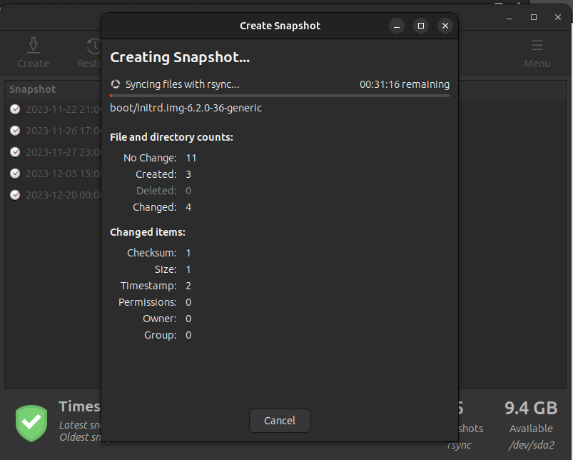
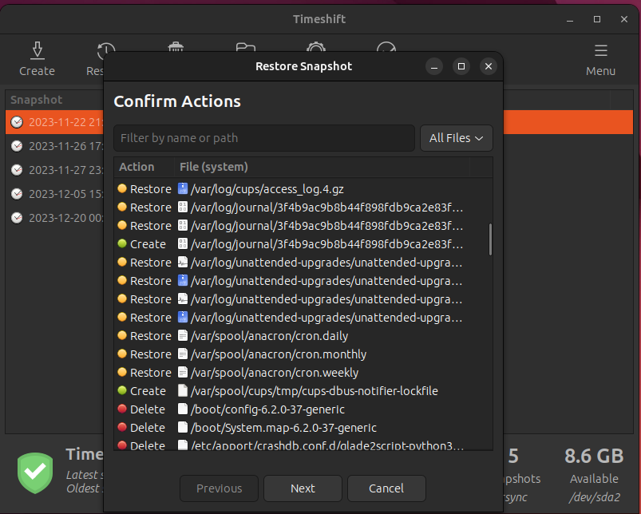
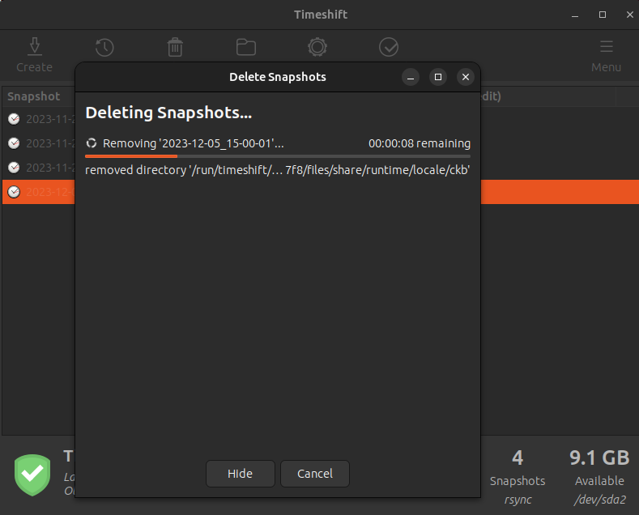

Timeshift- это программное обеспечение для создания резервных копий и восстановления системы в Ubuntu. Он разработан и поддерживается проектом Tony George, который является независимым разработчиком и создателем Timeshift. Timeshift является проектом с открытым исходным кодом, и его исходный код доступен на GitHub.
Ссылка на сайт прозводителя: ссылка
Выборочное восстановление: - Timeshift предоставляет гибкость в выборе элементов для восстановления, позволяя пользователям восстанавливать только выбранные файлы, разделы или системные конфигурации.
Опции резервного копирования на основе фильтров: - Программа предлагает использование фильтров для настройки, какие файлы и директории включать или исключать из резервных копий, что полезно для персонализации процесса резервного копирования.
Сжатие данных: - Timeshift предоставляет опцию сжатия данных в резервных копиях, что помогает уменьшить объем занимаемого места на носителе.
Создание снапшота
Откат к снапшоту (полное действие показать сложно, т.к оно приводит к перезагрузке системы)
Удаление снапшота
Timeshift предлагает функциональность, подходящую как для домашнего, так и для корпоративного использования. В домашнем контексте программа обеспечивает простое и интуитивное создание резервных копий и восстановление системы. Гибкие опции, такие как выборочное восстановление, создание точек восстановления и поддержка нескольких версий, делают Timeshift эффективным инструментом управления безопасностью системы в домашнем окружении.
В корпоративной среде Timeshift также представляет ценность, обеспечивая быстрое восстановление системы после сбоев. Опции выборочного восстановления и интеграция с системой уведомлений облегчают администрирование, а функции поддержки нескольких точек восстановления и снимков Btrfs обеспечивают надежность и гибкость в управлении данными.
В обоих случаях Timeshift предоставляет простое и надежное решение для создания резервных копий, повышая безопасность и управляемость системы. Гибкие настройки делают Timeshift подходящим для различных пользовательских потребностей, будь то домашний пользователь или корпоративный администратор.